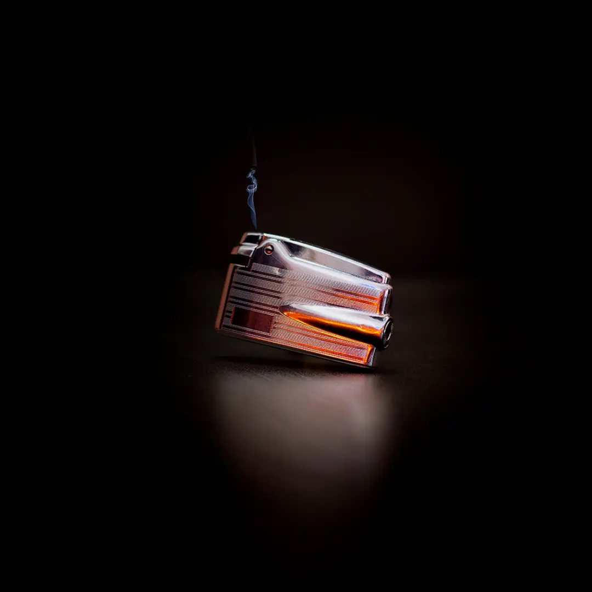
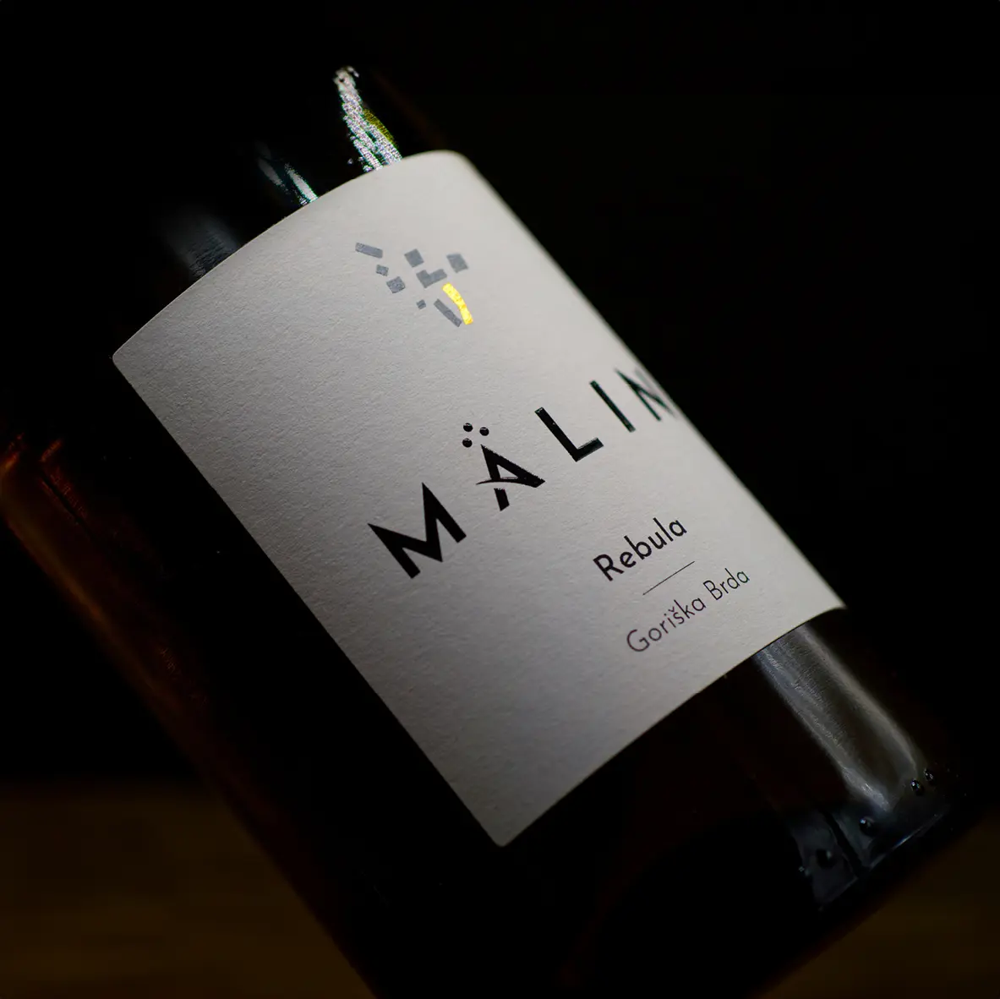
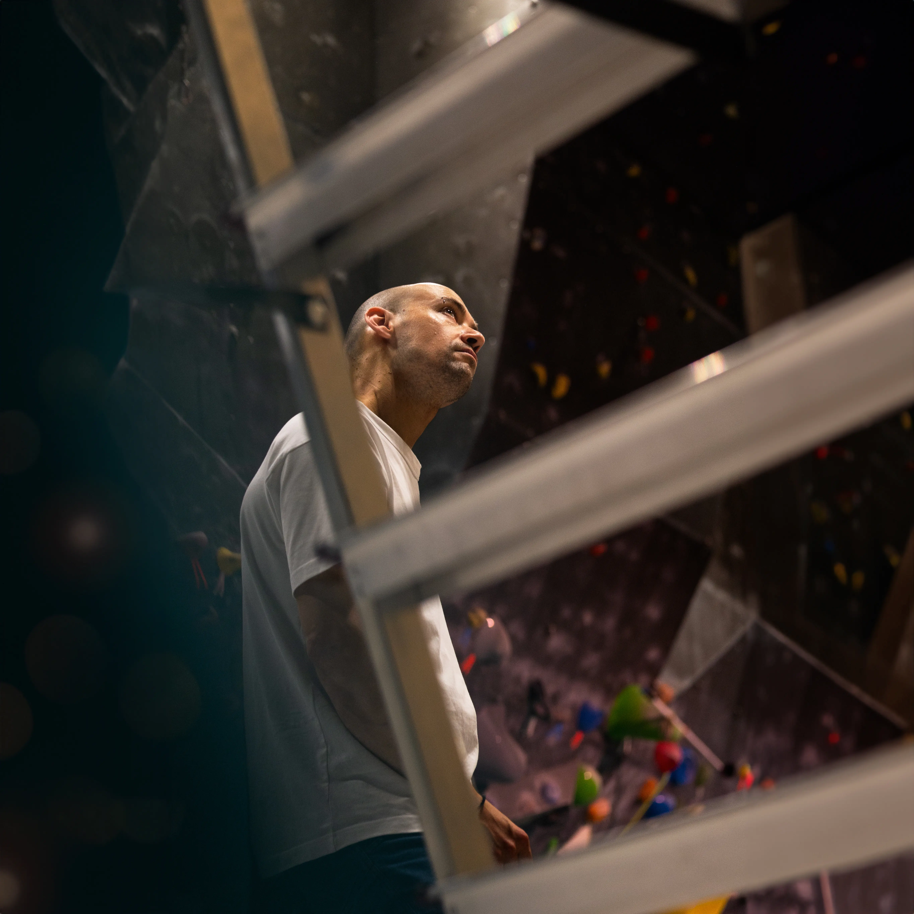
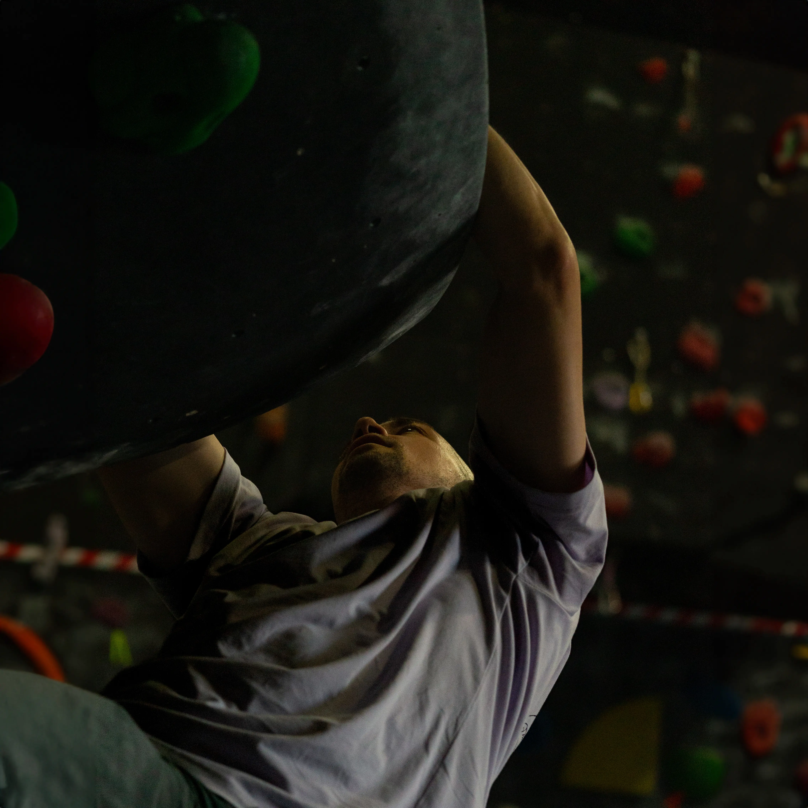
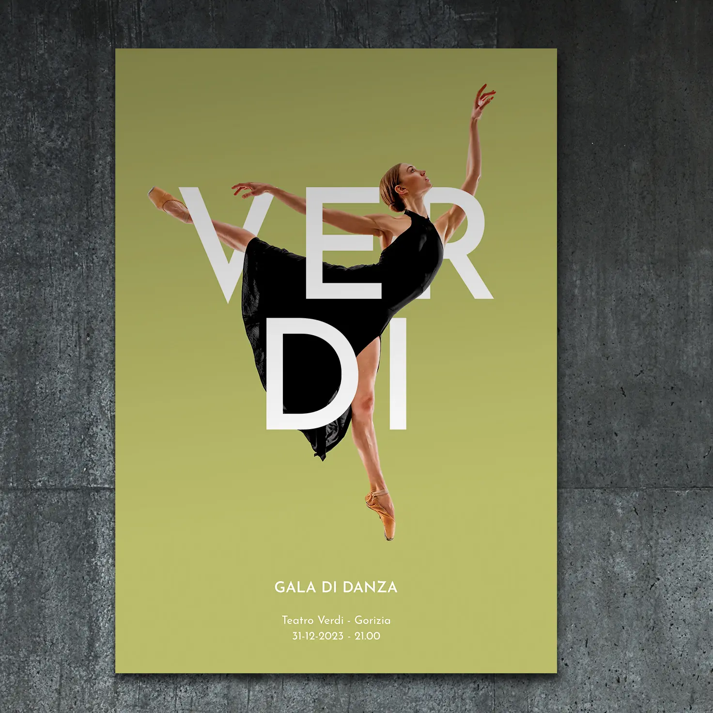
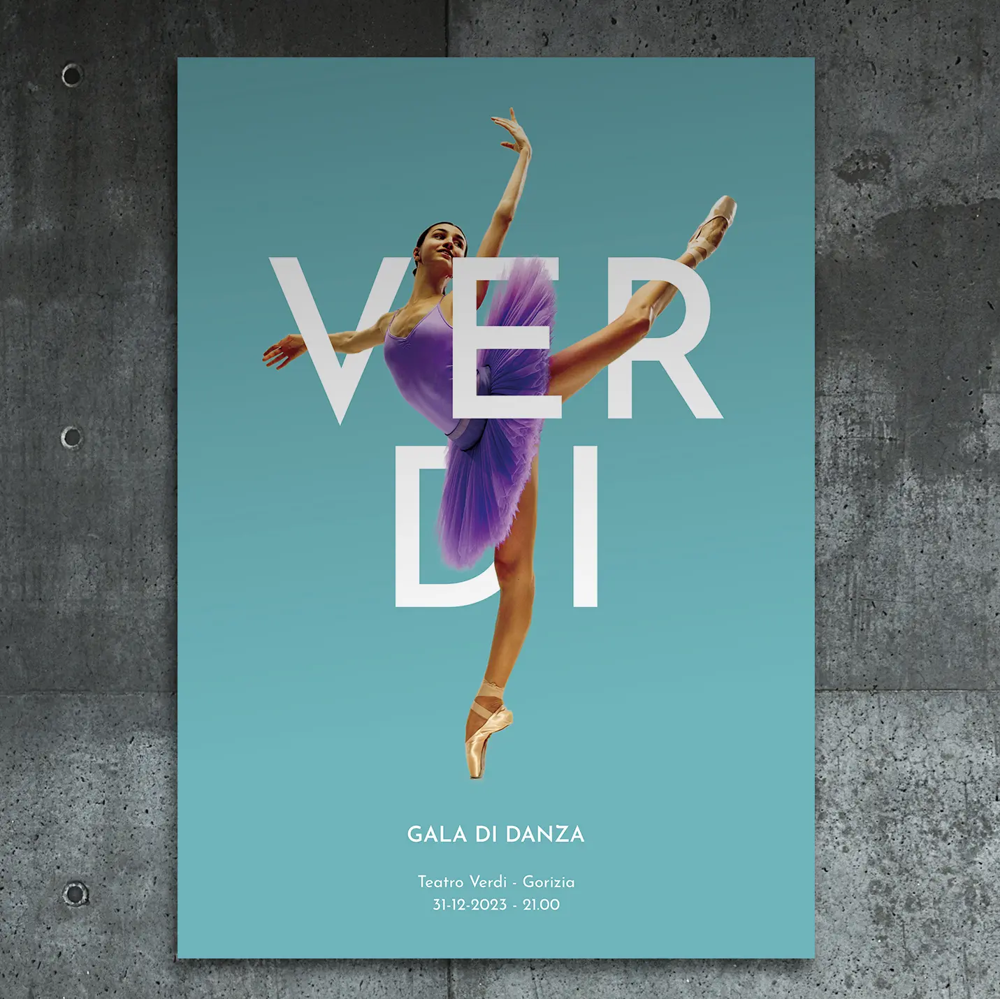
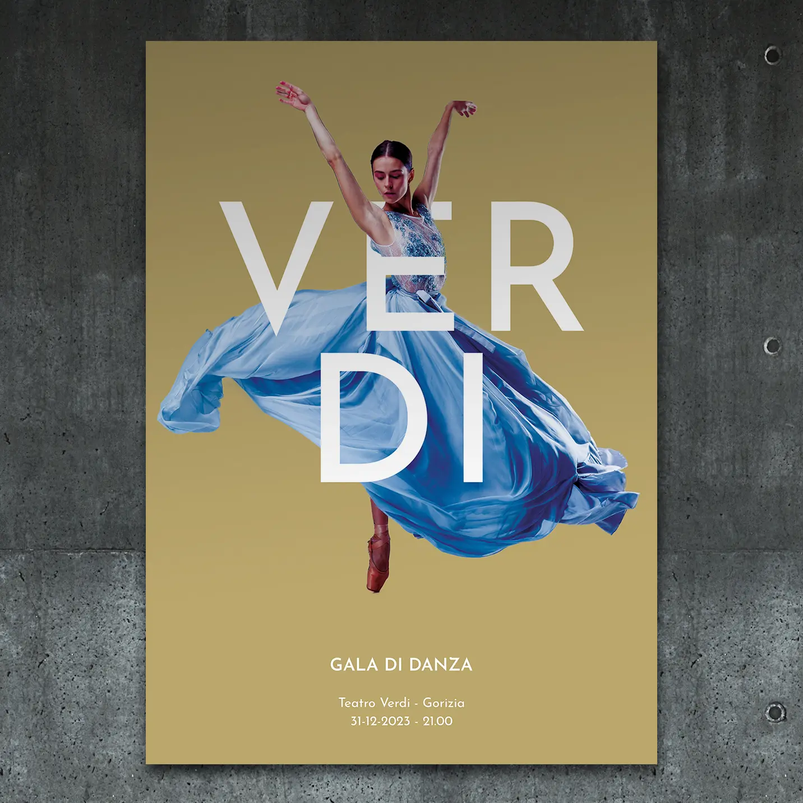
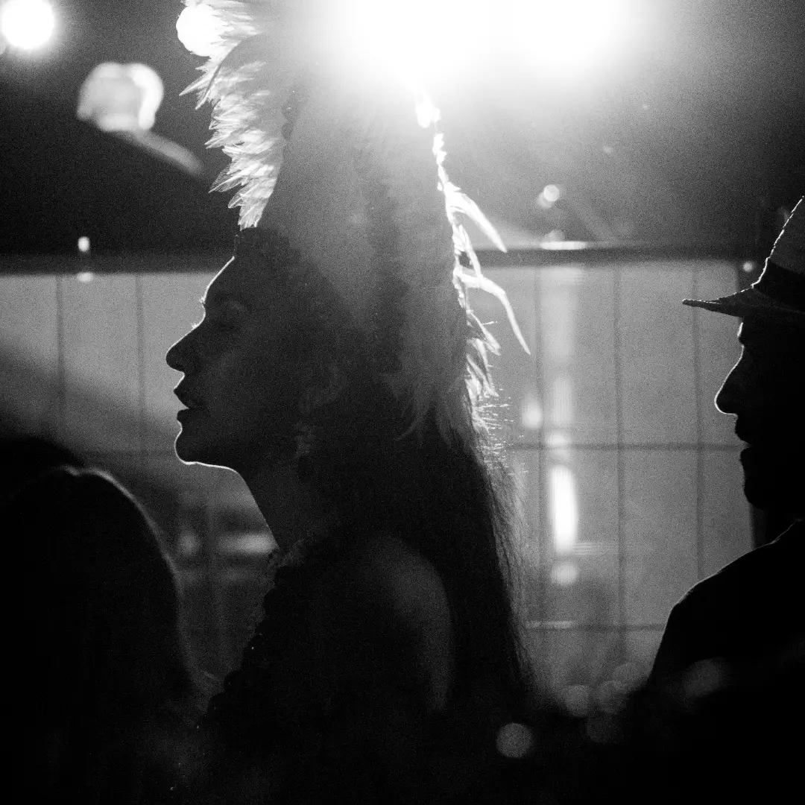
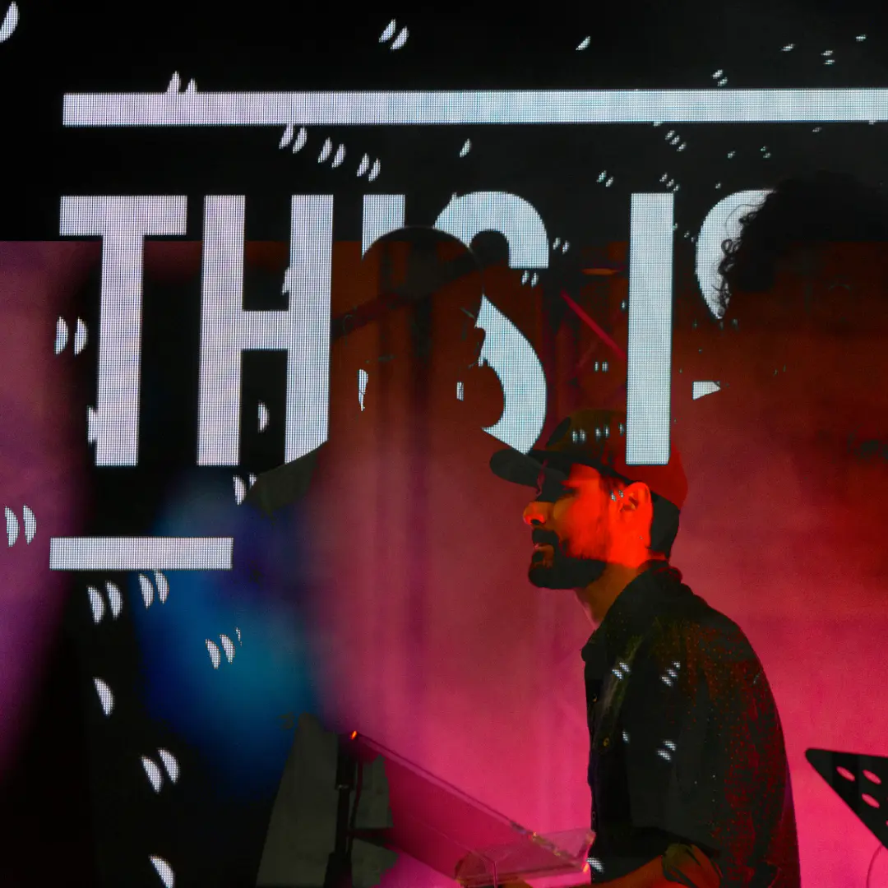
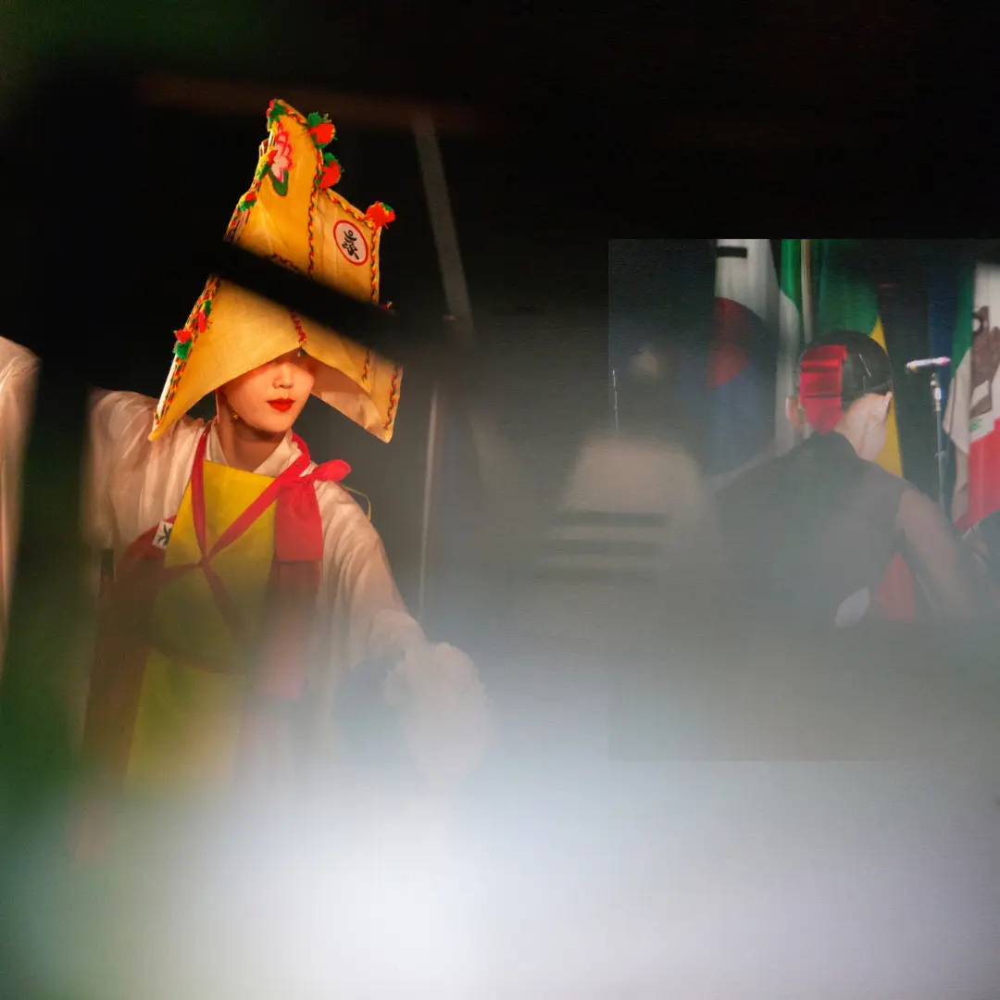

Fotografia Professionale
Fotografia di prodotto, ritratti corporate e reportage aziendale. Immagini pensate per e-commerce, cataloghi e social media che comunicano valore e costruiscono fiducia nel tuo brand.
ApprofondisciSe la tua azienda ha bisogno di farsi trovare, di essere riconoscibile e di convertire attenzione in richieste concrete, sei nel posto giusto. Sono Sibari Bonato, consulente di marketing strategico con sede a Gorizia, attivo in tutto il Friuli Venezia Giulia e oltre. Unisco branding, web design e comunicazione digitale in un sistema integrato pensato per produrre risultati misurabili — non solo un bel design.
Ogni progetto parte da una strategia. Poi diventa design, contenuti, risultati.
Fotografia di prodotto, ritratti corporate e reportage aziendale. Immagini pensate per e-commerce, cataloghi e social media che comunicano valore e costruiscono fiducia nel tuo brand.
ApprofondisciAnalisi del mercato, posizionamento e piani di comunicazione costruiti su dati reali. Niente teoria fine a se stessa: solo strategie che puoi applicare e misurare.
ApprofondisciLogo, palette, tipografia, tono di voce. Costruisco identità di marca coerenti che rendono la tua azienda riconoscibile e memorabile in ogni punto di contatto.
ApprofondisciSiti web veloci, puliti e ottimizzati per i motori di ricerca. Progettati per convertire visitatori in contatti, non per vincere premi di design.
ApprofondisciContenuti, social media e campagne pensate per raggiungere il pubblico giusto con il messaggio giusto. Ogni azione collegata a un obiettivo chiaro.
ApprofondisciFotografia professionale di prodotto, corporate e reportage aziendale a Gorizia e in tutto il Friuli Venezia Giulia



















 copia.webp)

Raccontami cosa vuoi ottenere. Ti dico se e come posso aiutarti — senza impegno.
Scrivimi